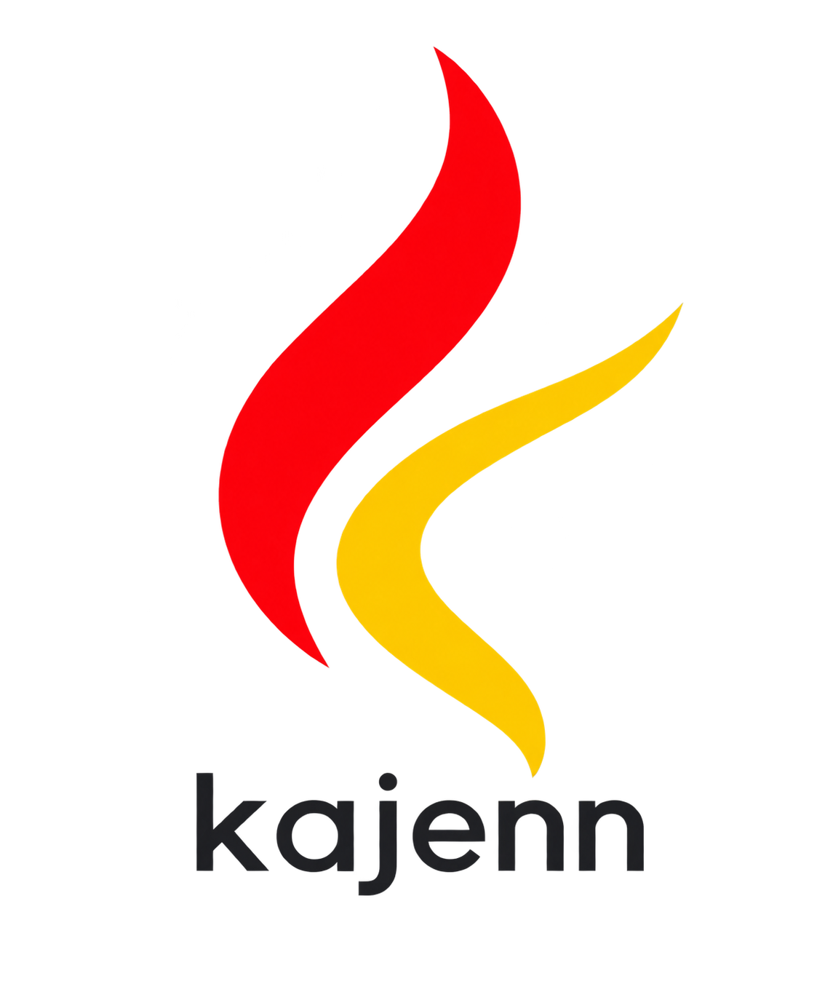

Visual reference sheet
This is a static design document, not a Gramlot application. Component samples do not execute actions.
Palette
#C82625#F2AD19#24262B#F5F7FA#FFFFFF#EDF1F5#D5DCE5#7A8798#202B3A#526174#172C43#F4F7FB#245A86#1B4669#FFFFFF#E6EFF7#245A86#176344#E8F5EE#785000#FFF3D6#A5232D#FCECEF#245A86#E6EFF7#526174#EDF1F5#142234#E6EDF5#ACBDCE#86D9AD#FFD27B#FFADB4#245A86#7A4EA0#14766B#9B5A15Component samples
INSPECTION · illustrative context Target: application-01 No commands are executed by this document.
Use the original token file for implementation. The complete shared guide follows.
kajenn — visual identity and application theme
Version 0.2 · Last updated: 2026-09-18 · Status: approved logo assets; proposed interface theme.
This guide is the shared visual reference for the kajenn server application and extensions. It defines brand usage, colors, typography, spacing and component behavior. It is a design specification, not an installed Gramlot theme.
The logo direction and lighter lettering have been selected by the project owner. Interface tokens remain proposals to validate on the first working Gramlot screen.
1. Brand assets
| Asset | File | Dimensions | Use |
|---|---|---|---|
| Standalone symbol | kajenn-mark.png | 1254 × 1254 | Navigation, compact branding, locations already showing the product name |
| Symbol with wordmark | kajenn-logo.png | 1145 × 1374 | Sign-in, product information, introductory pages on light backgrounds |
{kind=link}
{kind=link}

Both PNG files contain transparency. The symbol combines a red coordinating curve and a single gold curve, suggesting heat and movement. Preserve the orientation, proportions, colors and transparent margins. Do not stretch, rotate, decorate or recolor it to indicate operational state.
The selected wordmark is lowercase, with lighter weight and more open spacing than the original version. It is raster lettering rather than an identified font. It is not a substitute for choosing the application's UI font. A future common vector or lettering master is needed for exact reproduction across related marks.
Use a 40–48 px image box in the header and assess the visible symbol, since the PNG includes transparent margins. Start the full logo at 160 px wide and check the lettering at the actual display size. Leave at least 8 px clear space around a header-sized image box. Do not place notification badges over the symbol.
On dark backgrounds, use the standalone symbol with a separate light UI product label. The dark wordmark asset is intended for light backgrounds. Dedicated favicon, monochrome and vector masters are not included; embedding a PNG in SVG does not create a vector master.
2. Graphic references
| Reference | Relevant qualities | Boundary |
|---|---|---|
| kajenn mark | Flowing curves, cayenne red, warm gold | Primary product identity |
| Gramlot mark | Organic movement, open space, gold linking to blue | Framework reference; not a replacement for kajenn branding |
| Gramlot showcase | Clear structure, blue navigation, neutral surfaces | Experimental reference, not an approved theme contract |
| Gramlot inspector | Trees, compact panels and contextual tools | Do not automatically inherit very small type or tight controls |
The Gramlot image is an unchanged reference copy from the local Gramlot site. The interface blue proposed below is not a sampled or certified brand color from that logo.
3. Visual principles
Use a calm, light working surface suitable for long administrative sessions. Reserve the red and gold primarily for brand identity. Use blue for navigation, selection and primary actions. Roles change permissions and available navigation, not the visual language.
Separate descriptive content, observed state and available actions. Prefer headings, whitespace and restrained dividers over repeated decorative cards. Use bounded surfaces only when they group related data or operations.
Avoid large gradients, glass effects, diffuse decorative shadows, arbitrary colored borders and dashboards consisting entirely of tiles. The logo's curves do not require curved data grids or ornamental controls.
4. Color tokens
The complete palette is in theme-tokens.json. Brand values are design targets; raster pixels may vary slightly.
| Token | Value | Purpose |
|---|---|---|
brand.cayenne |
#C82625 |
Brand red |
brand.gold |
#F2AD19 |
Brand gold and limited decorative accents |
brand.ink |
#24262B |
Wordmark charcoal |
background |
#F5F7FA |
Page background |
surface |
#FFFFFF |
Work areas and forms |
surface.subtle |
#EDF1F5 |
Grouping surfaces and table headers |
border |
#D5DCE5 |
Decorative separators |
border.control |
#7A8798 |
Essential control boundaries |
text |
#202B3A |
Primary text |
text.secondary |
#526174 |
Supporting text and metadata |
navigation |
#172C43 |
Header and navigation background |
navigation.text |
#F4F7FB |
Text on navigation |
action |
#245A86 |
Primary actions, links and light-surface focus |
action.hover |
#1B4669 |
Primary action hover |
action.text |
#FFFFFF |
Text on primary actions |
selected |
#E6EFF7 |
Selected item background |
Do not use gold text on white. Selection combines a pale blue background, blue text and an additional position indicator. Inline links are underlined. Do not derive error or warning colors automatically from the brand palette.
5. Semantic states and charts
| State | Foreground | Background | Additional indication |
|---|---|---|---|
| Healthy / success | #176344 |
#E8F5EE |
Check symbol and explanatory label |
| Warning | #785000 |
#FFF3D6 |
Warning symbol and cause |
| Error | #A5232D |
#FCECEF |
Error symbol and cause |
| Information / running | #245A86 |
#E6EFF7 |
Information or activity indicator and text |
| Unknown / unreachable | #526174 |
#EDF1F5 |
Unknown indicator and last contact |
Brand red does not mean failure. Destructive actions use an explicit label and error styling. Unknown is not zero. Disabled, empty, loading, unauthorized and failed states have distinct messages.
For charts, use one blue series when sufficient. Comparison series use the four chart.series* tokens with labels and distinguishable markers or line patterns. Preserve category mappings across pages. Keep state colors consistent between charts, lists and details. Label axes, units and time windows. Avoid rainbow palettes, 3D effects and decorative animation.
6. Typography
Use the system font stack in the token file; no remote font is required. The logo's raster lettering does not define the UI typeface.
| Element | Size / line height | Weight |
|---|---|---|
| Page title | 28 / 36 px | 600 |
| Section title | 20 / 28 px | 600 |
| Introductory copy | 16 / 24 px | 400 |
| Body and controls | 14 / 21 px | 400; important labels 500 |
| Metadata | 12 / 18 px | 400 |
| Logs, terminal, identifiers and paths | 13 / 19 px, monospace | 400 |
Do not reduce useful information below 12 px. Right-align table numbers and use tabular figures. Use monospace for technical identifiers and paths. Titles use sentence case. Display units for load and duration and the relevant time zone for timestamps. An unavailable value is not rendered as zero.
7. Geometry, density and responsive layout
Spacing scale: 4, 8, 12, 16, 24, 32 and 48 px. Corner radii: 6 px for controls, 8 px for panels, 12 px for dialogs. Borders are 1 px. Shadows are reserved for overlays such as menus and dialogs.
Proposed desktop shell: 64 px header, 232 px navigation, 24 px content padding, 32 px between sections. A contextual detail panel starts at 360 px and may be resizable when supported. Tables can use the full available width.
Standard controls are 36 px high; table rows 40 px. Compact mode uses 32 px rows without shrinking the text. Touch targets are at least 44 px. Choose density consistently for a view, not independently for each component.
Below 1100 px, move details below the list or into a dedicated view. Below 760 px, navigation becomes a revealable panel. Wide tables may scroll within their region; titles and primary actions remain reachable. Zoom and long labels must not hide operations.
8. Shared components
| Component | Rule |
|---|---|
| Primary button | One per action group; blue, white text, precise action verb |
| Secondary button | White surface, visible control border, dark text |
| Destructive action | Name the affected object; color alone is insufficient |
| Field | Persistent label, supporting text and adjacent validation message |
| Badge | Short status label; not styled as an interactive control |
| Table | Quiet header, horizontal separators, distinct hover and selection |
| Tree | Expansion and selection are separate; show the current path |
| Detail panel | Title, identity, important values and contextual actions |
| Dialog | Operational title, target context, action and cancellation |
| Message | Outcome, known cause and useful next step; important errors persist |
| Tooltip | Supplementary information only |
Hover, keyboard focus, pressed, selected and disabled are distinct states. Use a 2 px blue focus ring with 2 px offset on light surfaces and a light ring on dark navigation. Disabled controls retain readable content and explain their unavailability where needed; avoid global opacity that makes all content unreadable.
Use one consistent icon family: a 20/24 px grid and approximately 1.75–2 px strokes. Reuse the family supported by the chosen runtime; the actual library is not yet selected. Do not mix emoji and unrelated filled/outline styles for primary commands. Decorative icons are hidden from assistive technology; icon-only buttons have accessible names.
9. Operational views
Description and versions: short introductions, installation facts and application descriptions. Use the complete logo on the information page rather than in every panel.
Mounted applications: list name, code and mount, then open contextual details. Plugin configuration retains the selected application and entry point, with a tree and parameter panel.
Requests: separate active requests, completed requests and summaries. Keep filters in a consistent order; show units and the observed time window. During disconnection, retain the last snapshot and show its age.
Registries: use hierarchical navigation and details, distinguishing value, type and provenance. Do not expose private values merely to make an inspector more complete.
Runtime configuration: distinguish effective values from drafts. Show hot-changeable, read-only or restart-required states only when declared by the service. Runtime application and persistent saving have separate outcomes.
Logs: monospace timestamp, severity, source and message. Color the severity indicator, not the entire row. Keep search and pause controls visible; do not force scrolling while someone reads earlier entries.
Inspection terminal: use the dedicated dark console tokens, a visible target context, selectable output and command status. A terminal panel does not make the whole application dark. The inspection language and commands are defined separately.
Extension views: preserve the same information hierarchy, state semantics, density and contextual navigation. Show units and freshness for metrics. Keep partial outcomes visible per target when an operation affects multiple targets. Illustrative values in previews must be labeled as examples.
10. Gramlot integration
This guide and its static reference sheet are design material, not a Gramlot application or executable PoC. The implementation uses Source, Data Bags, bindings, controllers, resolvers and shared components. A theme is not a reason to introduce manual DOM handling or a parallel state system.
Centralize the tokens and map them to component contracts. Check Shadow DOM boundaries before claiming a CSS variable is sufficient. The following names were observed in the local PoC and must be verified against the chosen runtime version:
| kajenn token | Observed Gramlot hook |
|---|---|
| UI font and body size | --font-family, --font-size |
| Surface / primary text | --color-bg, --gray-900 |
| Secondary text | --gray-600, --gnrfieldlabel-color |
| Action / focus | --accent-color, --field-focus-border |
| Control border | --field-border |
| Decorative border | --panel-border, --box-border |
| Control radius | --form-field-radius |
| Selection background | --tree-selected-bg |
| Inspector surfaces | --gramlot-inspector-bg, --gramlot-inspector-surface, --gramlot-inspector-text, --gramlot-inspector-accent |
This is a preliminary integration map, not a stable API contract. Missing reusable capabilities belong in the framework. Application styling is separate from the Read the Docs theme specified for Gramlot documentation sites.
11. Readability and verification
Project targets: at least 4.5:1 contrast for ordinary text and 3:1 for essential control borders and focus indicators against the specified surfaces. The opaque pairs in contrast-check.json were calculated; this does not certify accessibility of the future application.
Check keyboard navigation, visible focus, accessible labels, 200 percent zoom, narrow viewports, long labels, missing data, offline states and high-volume logs in the first prototype. Never encode meaning only through color. Transitions last 120–180 ms and respect reduced-motion preferences; avoid continuous decorative pulsing.
12. Decisions and maintenance
Approved: logo direction and selected raster wordmarks. Proposed: UI palette, dimensions, density and typography. Pending: small-size optimization, common lettering/vector master and monochrome output. A full dark application theme is outside this initial proposal; only dark navigation and console surfaces are specified.
New pages use the same tokens, icon family, states and density without arbitrary local colors. Update this guide, the visual sheet and the token file together when shared decisions change. Extensions reference this guide and document only their identity differences and domain-specific applications.
13. Sources
- Brand asset index, standalone mark, logo with wordmark.
- The Gramlot logo used as a visual reference is not part of this repository.
- Observed showcase:
gramlot-poc: src/gramlot/showcase/showcase.css. - Observed theme and inspector:
gramlot-poc: js/pages/src/theme.cssandinspector-theme.css. - Architecture boundaries:
gramlot: docs/00-constitution.md.